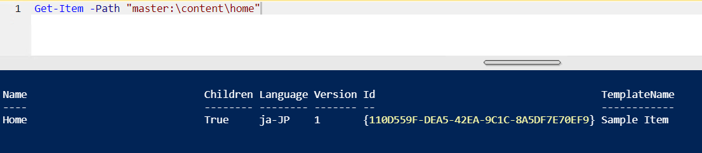
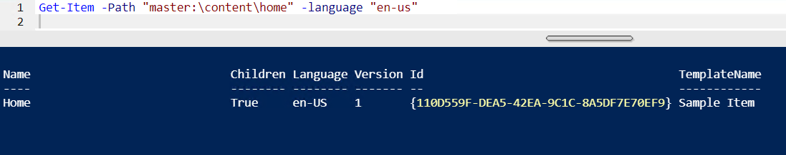
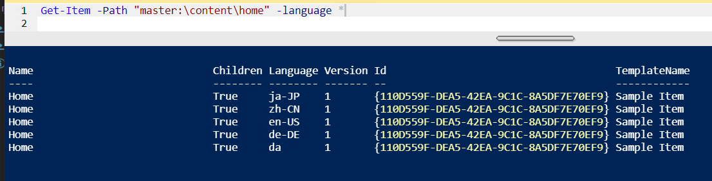
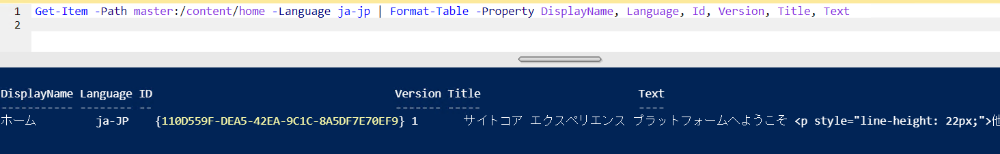
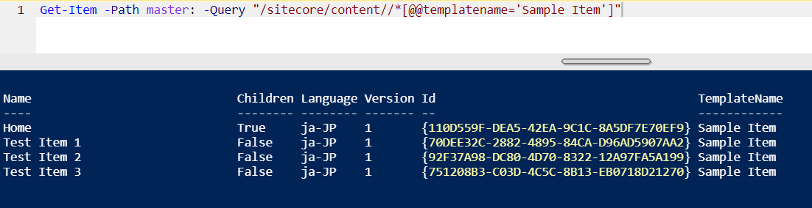
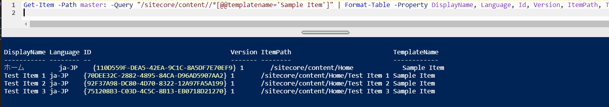
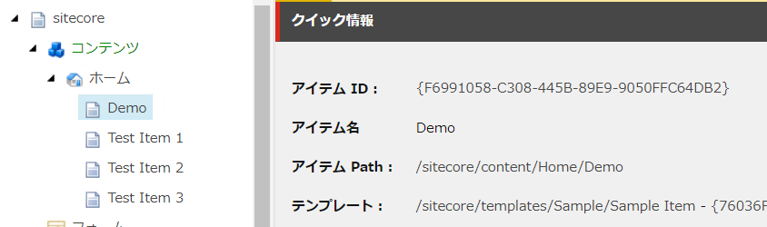
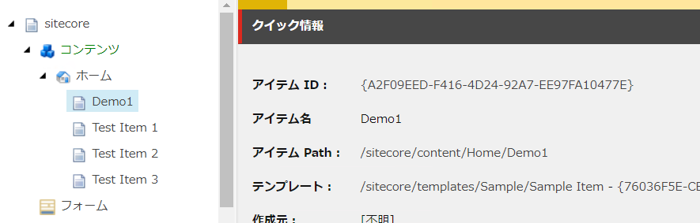
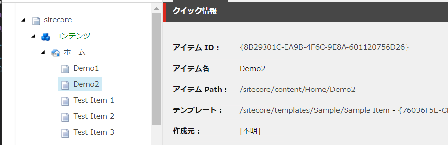

アイテムに関するコマンド¶
アイテムを操作するためのコマンドとして、以下のコマンドが用意されています。
Get-Item¶
アイテムの情報を取得することができます。
Get-Item -Path "master:\content\home"
結果
言語を指定する場合は、-language "en-us" を追加します。
Get-Item -Path "master:\content\home" -language "en-us"
結果
すべての言語を指定する場合は以下の通り。
Get-Item -Path "master:\content\home" -language "*"
結果
アイテムの情報を表示します
Get-Item -Path master:/content/home -Language ja-jp | Format-Table -Property DisplayName, Language, Id, Version, Title, Text
結果
Sitecore Query を利用して取得することもできます。
Get-Item -Path master: -Query "/sitecore/content//*[@@templatename='Sample Item']"
結果
Sitecore Query で取得したデータを一覧で表示
Get-Item -Path master: -Query "/sitecore/content//*[@@templatename='Sample Item']" | Format-Table -Property DisplayName, Language, Id, Version, ItemPath, TemplateName
結果

{kind=link}
{kind=link}
{kind=link}
{kind=link}
{kind=link}
{kind=link}
New-Item¶
新しいアイテムを作成するコマンドです。
New-Item -Path "master:\content\home" -Name "Demo" -ItemType "Sample/Sample Item"
# or
New-Item -Path "master:\content\home" -Name "Demo" -ItemType "{76036F5E-CBCE-46D1-AF0A-4143F9B557AA}"
結果
{kind=link}
{kind=link}
Move-Item¶
アイテムを移動させるためのコマンドです。
Move-Item -Path "master:\content\home\Demo" -Destination "master:\content\home\Demo1"
結果
{kind=link}
Copy-Item¶
Copy-Item -Path "master:\content\home\Demo1" -Destination "master:\content\home\Demo2"
結果
{kind=link}